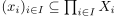
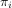
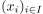
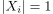
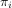
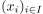
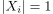

Produkttopologie für eine diskrete Topologie
1. Satz
Seien  topologische Räume mit der diskreten Topologie.
Dann ist die Produkttopologie diskret g.d.w. für alle bis auf endlich viele gilt.
topologische Räume mit der diskreten Topologie.
Dann ist die Produkttopologie diskret g.d.w. für alle bis auf endlich viele gilt.
2. Beweis
2.1. a)
Nach der Charakterisierung der Produkttopologie als gröbste Topologie für stetige Projektionen folgt:
Sei , so sind bloß endlich viele  nichttrivial.
Man wähle für diese die Projektionen  aus, bilde das Urbild dieser Abbildung und nehme den endlichen Durchschnitt dieser offenen Mengen (vgl. Charakterisierung für Stetigkeit).
Daraus folgt, dass  offen ist, da für ein Element aus dem Schnitt  zwingend übereinstimmt und für dies durch den Schnitt gewährleistet ist.
nichttrivial.
Man wähle für diese die Projektionen  aus, bilde das Urbild dieser Abbildung und nehme den endlichen Durchschnitt dieser offenen Mengen (vgl. Charakterisierung für Stetigkeit).
Daraus folgt, dass  offen ist, da für ein Element aus dem Schnitt  zwingend übereinstimmt und für dies durch den Schnitt gewährleistet ist.
2.2. b)
Seien unendlich viele